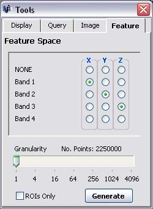

Feature Space
Generating a Feature Space
Parbat3D can generate a Feature Space, or 3D scatter plot, from data
contained within the points of an image. To create a Feature Space
based on the currently loaded image, follow these steps:
- An image must first be loaded. See loading an image
- If the Tools Window is not visible, click on the 'Window' menu followed by 'Tools'.

- Click on the 'Feature' tab in the Tools Window.

- Select which image bands you want to display as the X, Y and Z variables on the scatter plot.
- Change the granuality setting if required. Increasing the granuality will reduce the number of points
generated and therfore decrease the loading time.
- Click the 'Generate' button.
*feature space screenshot*
- *Stiff about ROIs*
Navigating a Feature Space
The feature space can be rotated by doing the following:
- Press and hold the left mouse button within the feature space, move the mouse, then release the left mouse
button.
The feature space can be zoomed in/out by doing the following:
- Press and hold the right mouse button within the feature space, move the mouse forward/back, then release
the right mouse button.